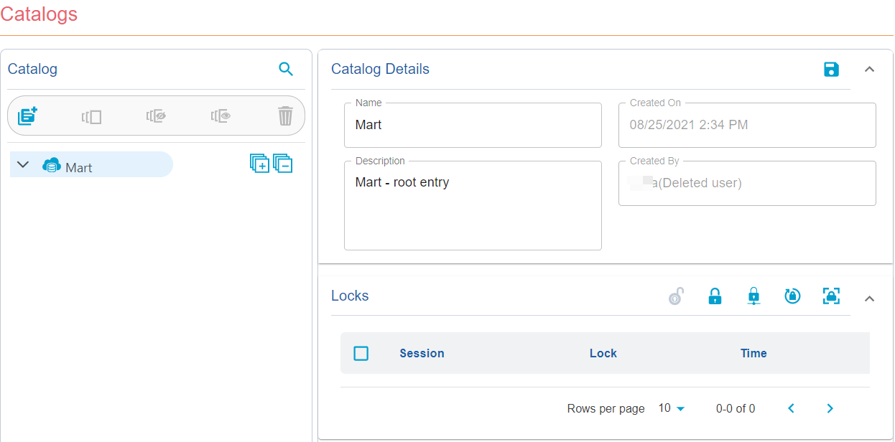
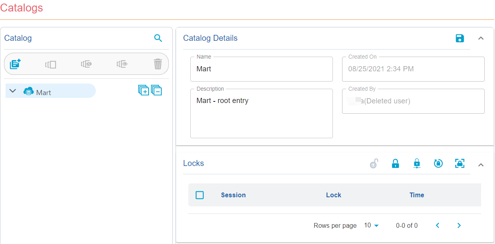

Go to Application Menu > Catalogs.
The Catalogs page appears.

A library is added to the catalogs tree.
A catalog is similar to a directory structure. It consists of libraries, data models, model versions, and templates. Catalog Management displays a hierarchical tree of Mart and lets you manage your catalogs. It has all the features included in the Library Manager and Session Manager modules that were available in the previous releases of erwin® Data Modeler Workgroup Edition.
Following are some of the features in Catalog Management:
Libraries
Use libraries to group related models. Libraries add an extra level of security or isolate implementation differences, such as development and production environments. A library can be part of another library or can be present under the Mart.
Sorting
In a catalog, the libraries are sorted alphabetically, and the models within the libraries are also sorted alphabetically. Versions are sorted newest to oldest; Named Versions appear first, and then Delta Versions follow. The catalog entries sort in the following order: Libraries, Models, Templates, and Versions respectively.
Context Menu
The context menu appears when you select a catalog entry and right-click. You can use the context menu to cut, copy, paste, and delete a library, model, or template. You can also use the context menu to mark a Delta version and delete, hide, and unhide Named and Delta versions.
You can create, search, delete, copy, and move catalog entries; you can hide and unhide versions.
Search Models
You can search models within models loaded from mart. This increases performance of mart server and fetch search results quickly. By default, Loaded Models is selected.
To search model, follow these steps:
Searches within models loaded from mart.
Searches within all models from mart.
To create Libraries, follow these steps:
Go to Application Menu > Catalogs.
The Catalogs page appears.

To create a Named version, follow these steps:
A Named version is created.
The name and description of the Named version is updated.
To hide a model version, select a version from the Catalog pane, and click  .
.
To unhide a model version, follow these steps:
To delete a catalog entry, select the entry and click  .
.
The Delete button is disabled when the last existing version of a model, or all the versions of a model are selected. The catalog entry is permanently deleted from Mart and it cannot be recovered.